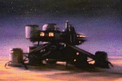
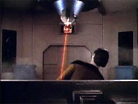
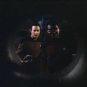
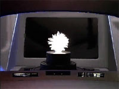
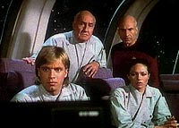

|
MANCHETE
DO EPISDIO
Histria
previsvel e arrastada, apesar
do bom uso de conceitos cientficos
Episdio
anterior | Prximo
episdio
Sinopse:
Data Estelar: 41463.9.
 A
Enterprise chega a Velara III, para verificar a situao de
cientistas que esto no processo de terraformao do planeta
supostamente desabitado.
Durante a visita, um engenheiro misteriosamente morto quando uma
perfuratriz a laser se descontrola, quase matando Data tambm.
Ao investigarem a causa do acidente, descobrem uma minscula forma
de vida inteligente, nativa do planeta, que est sendo destruda
pelos terraformadores. O grupo avanado teleporta uma das criaturas
para investigar, mas ela no est muito a fim de conversa.
Aps assumir o controle da nave, a criatura declara guerra
Enterprise e aos humanos, classificados por ela como "horrveis
sacos feitos quase todos de gua".
 Aps
descobrir que a forma de vida est tirando energia a partir da luz,
como uma clula fotoeltrica de um painel solar, Picard instrui
Riker a reduzir a luminosidade do laboratrio em que a criatura se
encontra.
Enfraquecido, o ser resolve ouvir o que Picard tem a dizer, e as
duas espcies chegam a um acordo. A criatura ainda considera os
humanos muito primitivos, mas pede que eles voltem em algumas
centenas de anos.
Comentrios:
"Home
Soil" uma bela pea de aplicao da cincia na fico
cientfica. Mas o preo foi alto: enquanto programa de
entretenimento, acabou deixando a desejar. A premissa muito bvia
desde o incio, e no oferece quaisquer reviravoltas, tornando o
desenrolar da histria um tanto quanto arrastado.
 Desde
o momento em que Data e Geordi encontram a suposta forma de vida,
tudo j se desenha na cabea do telespectador --ele j imagina o
que teria acontecido e por quais razes. Depois disso, apenas
questo de ir confirmando essas expectativas --a forma luminosa de
fato est viva, ela inteligente e a responsvel pela morte
de um dos terraformadores, que estavam inadvertidamente destruindo
seu habitat, e o lder da equipe, Mandl, j imaginava que formas
de vida aliengenas poderiam estar presentes no planeta e mesmo
assim teria optado pela continuao dos trabalhos.
Os detalhes da histria parecem ser bastante convincentes do ponto
de vista cientfico --uma forma de vida baseada em silcio (e no
silicone, como diz a dublagem), ligada no subsolo por uma corrente
de gua salgada (capaz, portanto, de conduzir eletricidade),
poderia formar uma rede que funcionaria similarmente a um
computador, possivelmente atingindo nveis inteligentes.
Por ser uma forma de vida to similar a um computador (que tambm
baseado em redes de circuitos desenhados em chapas de silcio),
no difcil imaginar que ela fosse capaz de criar algum tipo de
interface com o computador da Enterprise, se apoderando do controle
da nave.
 A
idia de que a criatura estava se alimentando a partir de luz tambm
interessante e mostra que nem sempre o ponto fraco de um oponente
atingido com uma salva de torpedos fotnicos --s vezes, apagar
a luz resolve o problema. Ou seja, inteligncia pode
invariavelmente ser uma arma muito mais eficaz que a mera fora
bruta.
Embora seja sempre um prazer ver escritores que tentam respeitar as
leis da fsica, talvez o rigor seguido nesse episdio tenha
amarrado os roteiristas. Ao se prenderem demais aos aspectos tcnicos,
eles podem ter negligenciado o coeficiente de ao necessrio
histria.
Seguramente uma das idias foi criticar a prpria filosofia de
alguns cientistas --que algumas vezes ficam to obstinados por suas
prprias idias e convices que acabam jogando a tica e o bom
senso pela janela, s para obter o sucesso proveniente de seus
feitos, por mais que eles se provem equvocos. De fato, esse
comportamento no incomum nos crculos cientficos contemporneos.
 O
ritmo do episdio tambm mais parece o de um trabalho cientfico
--arrastado e, em geral, com resultados previsveis-- do que o de
uma histria de fico. Faltou adrenalina. A nica tentativa de
inserir tenso ao segmento --por meio das ameaas da criatura
segurana da Enterprise-- no funcionou: o aliengena ameaou,
ameaou, mas no fim no fez nada contra a nave ou seus
tripulantes.
Os personagens, tanto os regulares como os convidados, tambm no
contriburam e permaneceram to rasos quanto o de costume nesta
primeira temporada.
Pesando prs e contras, o episdio ainda consegue manter o mnimo
necessrio para atrair a ateno, por apresentar idias
interessantes. Uma pena que o roteiro revele-as todas rapidamente,
sem dar a chance de o telespectador tentar refletir a respeito e
levando-o a um lento e previsvel desfecho.
Citaes:
Forma de vida -
"Ugly Bags Of Mostly Water, we try at peace, you do not listen.
Bag who drill in Sand Of Home had to die."
("Feios sacos quase todos de gua, ns tentamos a paz, vocs
no ouvem. Saco que cavava na Areia do Lar teve de morrer.")
Trivia:
 Segundo o produtor Maurice Hurley, "neste episdio, tudo o que
poderia dar errado aconteceu", diz. "Algumas pginas do
roteiro foram rescritas um dia antes de serem filmadas!"
Segundo o produtor Maurice Hurley, "neste episdio, tudo o que
poderia dar errado aconteceu", diz. "Algumas pginas do
roteiro foram rescritas um dia antes de serem filmadas!"
Um
pintura com a estao Velara III completa, inclusive com uma nave
auxiliar estacionada, foi desenhada por Andrew Probert para servir
de cenrio, mas no foi sequer utilizada.
Walter
Gotell, que interpreta Kurt Mandl, o chefe dos terraformadores,
mais conhecido por seu papel nos filmes de James Bond, como o
general Gogol.
Ficha
tcnica:
Histria de Karl Guers & Ralph
Sanches & Robert Sabaroff
Roteiro de Robert Sabaroff
Direo de Corey Allen
Exibido em 22/02/1988
Produo: 017
Elenco:
Patrick Stewart como
Jean-Luc Picard
Jonathan Frakes como William Thomas Riker
Brent Spiner como Data
LeVar Burton como Geordi La Forge
Michael Dorn como Worf
Gates McFadden como Beverly Crusher
Marina Sirtis como Deanna Troi
Wil Wheaton como Wesley Crusher
Denise Crosby como Natasha "Tasha" Yar
Elenco convidado:
Walter Gotell como
Kurt Mandl
Elizabeth Lindsey como Louisa Kim
Gerard Prendergast como Bjorn Benson
Mario Roccuzzo como Arthur Malencon
Carolyne Barry como engenheira
Episdio
anterior | Prximo
episdio
|